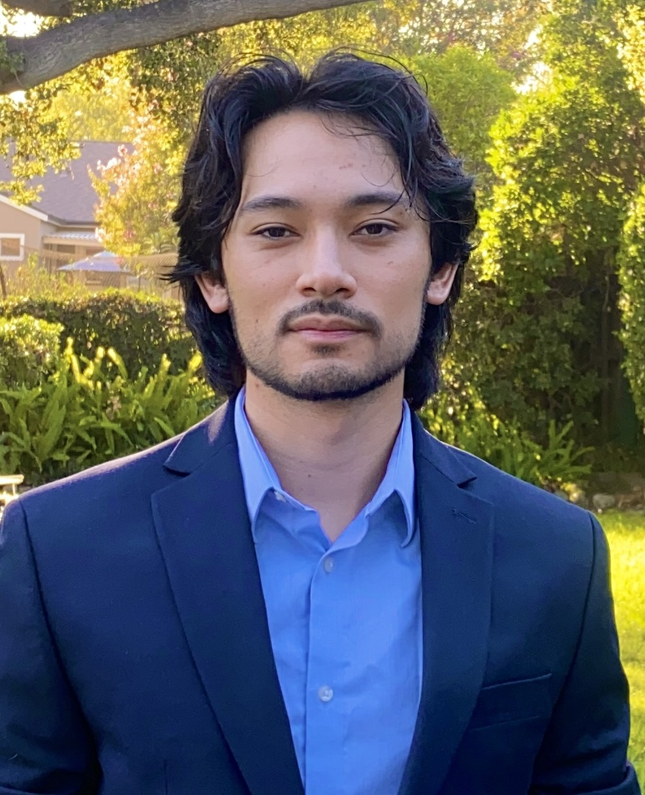
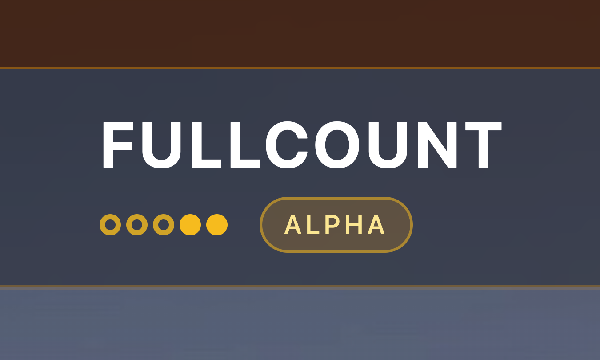
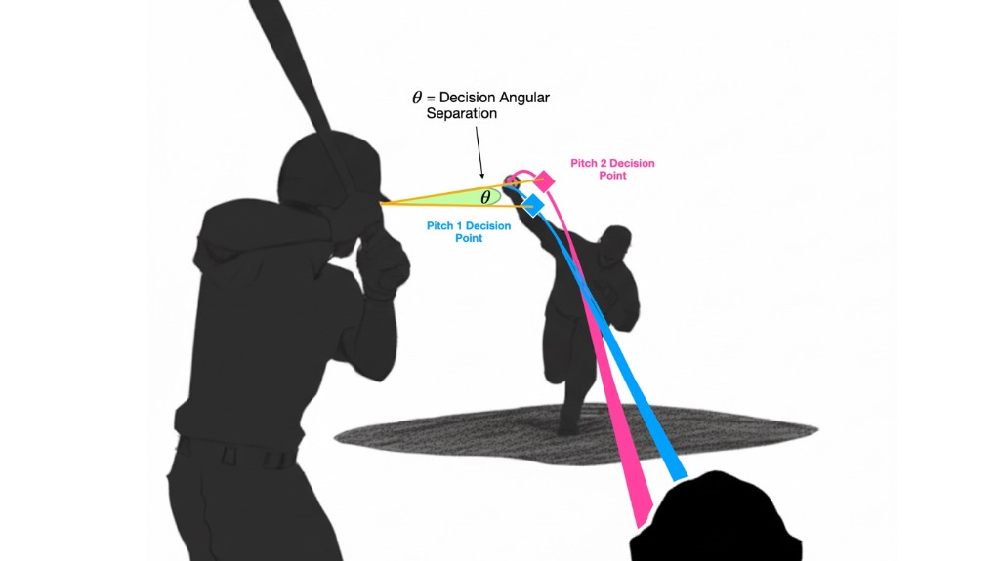
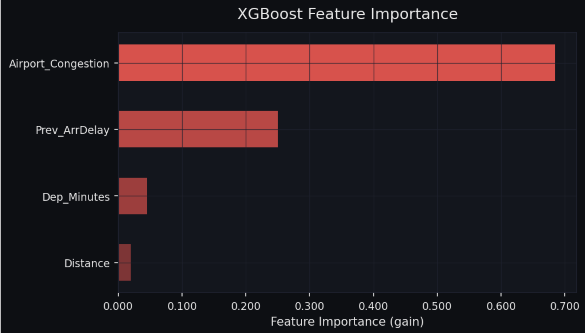
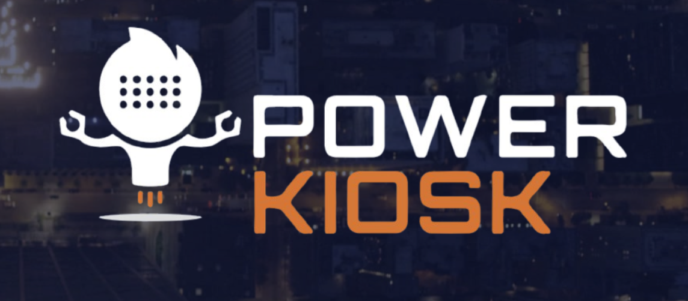
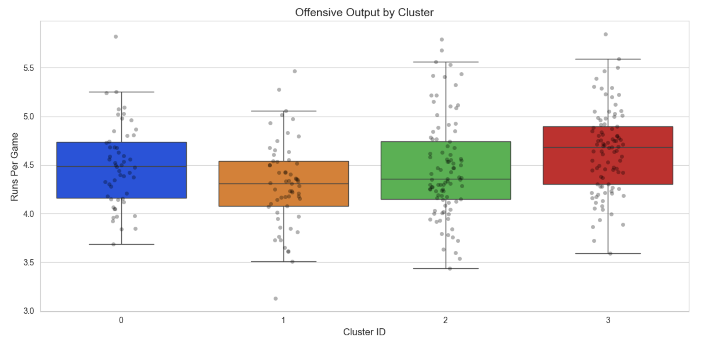

About
Background
M.S. Applied Data Science, University of Chicago. B.S. Applied Mathematics, UC Santa Barbara.
I build models and data systems that hold up when the domain experts check the work: sports analytics, reliable AI retrieval, and applied ML.
Thrives working collaboratively in messy, high-variance data for grounded practical solutions.
Toolkit Python · SQL · R · AI · XGBoost · causal inference · RAG / LLM systems · DuckDB · FastAPI · Docker · GCP · AWS · Streamlit
Selected work
Projects
-

01FullCount AI
Built a deterministic query path so natural-language asks against high-dimensional sports data return grounded answers instead of invented SQL.
DuckDB · FastAPI · LLM routing · AI reliability
-

02Pitch Tunneling
Measured pitch tunneling with Decision Angular Separation on 740k+ MLB sequences; DAS/AAS lifted out-of-sample R² on fastball-to-offspeed pairs.
Causal inference · angular separation · sequence modeling · MLB Statcast
-

03Flight Delay Propagation Index
Modeled cascading delay risk across the U.S. air network; XGBoost hit 0.870 AUC and showed systemic airport congestion outranked an aircraft’s own history.
XGBoost · network features · predictive modeling
-

04Agentic Document Intelligence
Automated extraction across 1,000+ unstructured utility records with OCR and agentic RAG, turning hours of manual expert review into seconds per file.
Agentic RAG · OCRmyPDF · GPT-4 · NLP
-

05Behavioral Archetype Analysis
Used Gaussian mixture models on high-dimensional performance data to surface offense archetypes that beat baseline aggregates in high-leverage spots.
GMM clustering · unsupervised learning · sports analytics